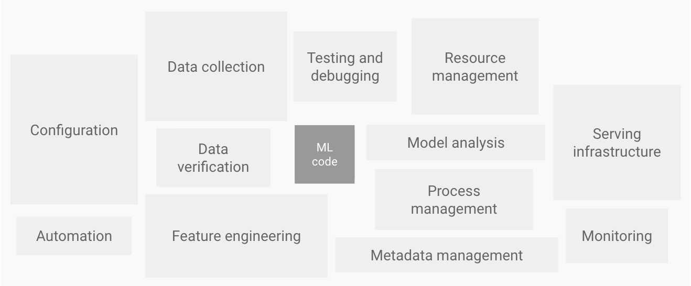

MLOps¶
Academia and industry have different goals and focuses for good reasons. But it’s useful to learn what is happening on the other side.

This famous image from Machine Learning: The High Interest Credit Card of Technical Debt, [Sculley et al., 2014] shows various kinds of modules that are needed, on top of ML code, to build an ML system. There are so many of them that people even coined a new word, “MLOps”. Among these, we will discuss the creation and management of datasets, evaluation of an ML model, and deployment in this chapter.
Dataset Creation¶
1. Item Sampling¶
To create a dataset, one first needs to collect the items. If the source of an item is limited in some sense, we might want to simply maximize the number of items. Otherwise, we need to sample the items from a bigger set, which might be the whole population (e.g., the whole catalog of streaming service).
In general, the goal of this sampling is to statistically represent the target set. But how? Here are some tips.
Use metadata (year, artist, language, genre) to ensure diversity
Make sure the items at extreme ends are included (e.g., the oldest and the newest songs)
OpenMIC-2018 [Humphrey et al., 2018] set a high bar on this. The source of the dataset is FMA [Defferrard et al., 2016] which has full tracks, and the goal was to sample 10-second segments so that each instrument class is represented well enough. The authors first trained an instrument recognition model using an existing dataset. The model was used to approximate class occurrence. Based on this, the authors sampled the (assumed to be) positive 10-second segments of an instrument – from least to most likely instrument class. Finally, then applied a rule so that no two clips share a source track.
2. Annotation¶
Once collecting the items, you’ll go through an annotation process.
Defining a taxonomy can be an overwhelmingly difficult task! Ask experts, see if there’s existing taxonomy you can use (e.g., WordNet).
Educate the annotators so that everyone has the same understanding of the task and the labels.
Be skeptical about the quality - Have multiple annotators and use the agreement to validate the labels.
After labeling, if you’re lack items with some labels, manually add the items. I.e., do some preemptive active learning
3. Postprocessing¶
All done? Yes – almost. But there are a few more things to do.
Mistakes in the split leads to mistakes in training and evaluation!
Make sure the (label and/or any other) distributions of training/validation/testing sets are similar.
Allocate enough items to validation and testing sets.
For example, when the dataset is not that large – Which is better? 90:5:5 vs 70:20:10. Of course, it all depends. But I’d prefer the latter since i) a 22% decrease of the training set is probably not critical while a 400% increase in validation set means our model selection will be significantly more reliable.
Dataset Management¶
In the ideal world, you have nothing to do once a dataset is created. In the world we’re living in, it might be just the beginning!
Version your dataset. It can be like versioning software (1.0, 1.0.1, 1.1.0, ..) which has nice rules about, for example, semantic versioning. Or maybe simply the dates and some explanation.
Save the version of the dataset with your models.
You may add new data samples. Why? 🤷♀️ Anyway, it happens.
Be aware of the distribution of the new subset and the result
Be consistent on the data pipeline (software and parameters used during audio processing)
Keep your data samples up-to-date. Add recent samples!
Keep your labels up-to-date.
E.g., genre labels (new genres may emerge), labels from language models
Evaluation: It is more than a single number¶
Choice of metric(s)¶
In papers, conciseness is a virtue!
We have to compare models (to show my model beats yours!). We prefer a single number such as AUC-ROC, PR-AUC, or average F-1 score, one that summarizes the performance of tags / with various metrics (e.g., precision and recall).
In industry, it might be a bit different.
You would want to evaluate the model in more detail. For example, the performance of each tag would matter.
Depending on use cases, people may focus on either precision or recall.
Optimize for your target metric¶
High precision? or High recall?
Know your application!
Thresholding or not?
Even with softmax, if the target is high precision, simply thresholding with value works.
Confidence estimation can be done in various way.
Deployment¶
Notes¶
Ensure the reproducibility of:
Software/your code!
Model
Data processing pipeline
Decoding mp3, or if it’s mp3 vs wav input, resampling algorithm, how to downmix, ..
Is your model actually useful for the whole catalog you have? E.g.,:
If album cover images are used in the model, are they going to be available for all the music tracks?
If you used lyrics, would it work for all the languages you need to support?
Food for thought: Aggregating segment level predictions¶
We often avoid this issue when using public datasets (e.g., MSD) as they come with 30-second preview only. If you have access to full tracks, congratulations! It’s an opportunity to improve the performance! This is where some ideas of multiple instance learning can help you.
Assuming the model is working properly, simply averaging the predictions/probabilities/logits would result in a better performance. This is because when misclassifications are rare, they are ignored as we choose the majority.
One would want to go further and let a model handle the aggregation. For example, a Transformer can be used on top of segment level predictions. This could solve some corner cases where averaging fails. Imagine an instrumental detector that is deployed for track-level classification but trained at a segment-level. Averaging (or majority voting) would result in incorrect classification if more than 50% of segments have no vocal; even if the track is not instrumental.